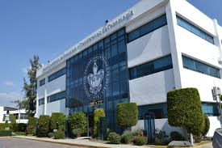

La Benemérita Universidad Autónoma de Puebla (BUAP) es una institución pública de educación superior mexicana, autónoma y descentralizada, cuya sede es la ciudad de Puebla, capital del estado del mismo nombre. Cuenta con más de 80 carreras, entre las que destacan:Física, Matemáticas, Derecho, Ciencias Políticas, Medicina, Administración e Ingeniería..
